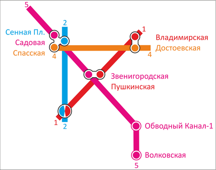
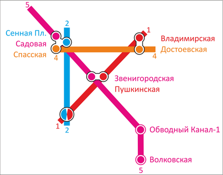

Немного о главном
На сегодняшний день петербургский метрополитен состоит из пяти линий. Первая линия была торжественно открыта 15 ноября 1955 года. Линии 4 и 5 с 1991 года и до марта 2009 были объединены и функционировали как одна — линия 4.
Объединение линий 4 и 5 на станции «Садовая» произошло вследствие отсутствия финансирования. В начале 90-х годов строительство «вторых половинок» этих линий было заморожено более, чем на 10 лет. Также приоритет сдачи Приморского радиуса в 90-х годах был выше, чем строительство метро в Купчине и в Коломне, и поэтому южная часть Правобережной линии была временно соединена с северной частью Фрунзенско-Приморской. Поезда со станции «Достоевская» прибывали не к «Спасской», как было запланировано изначально, а к «Садовой», для чего была построена двухпутная «временная» ССВ. В 2004 году работы по строительству станции «Спасская» и Фрунзенскому радиусу были продолжены после долгого перерыва.
Линия 5 была открыта в челночном режиме 20 декабря 2008 года. Тогда открыли свои двери две новые станции «Звенигородская» и «Волковская». При этом разделение линий было возможно только вместе с пуском станции «Спасская», которая приняла бы пассажиров 4, «Правобережной» линии. Её введение в строй многократно откладывалось из-за приёмки эскалаторов фирмы «Универсалмаш». Три месяца поезда Фрунзенско-Приморской линии курсировали исключительно между «Звенигородской» и «Волковской» по обоим путям, ожидая отладки бракованных эскалаторов на «Спасской». С 5:35 утра 7 марта 2009 года линии были окончательно разделены. С отрезка «Комендантский Проспект — Садовая» поезда теперь переходят на "новый" перегон к станции «Звенигородская», а в 2019 году пойдут в южное Купчино и промзону Шушары. Поезда же с «Достоевской» пошли на новую «Спасскую», а сейчас строится продолжение - мимо Театральной площади на намывные территории Васильевского острова и далее в Юнтолово. Вот как отличались схемы движения до 6 марта 2009 года и в наши дни:
 

Весь список прямо тут